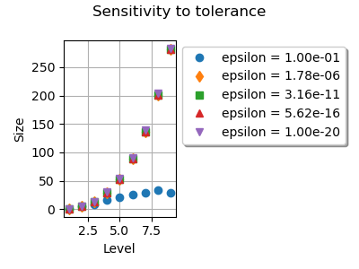
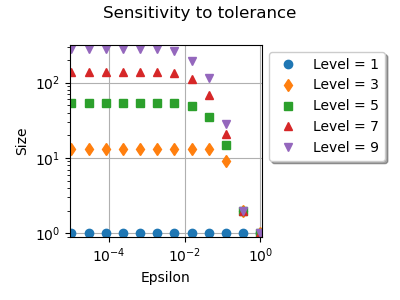
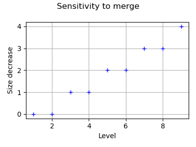

Note
Go to the end to download the full example code
Merge nodes in Smolyak quadrature¶
The goal of this example is to see the effect of the merge algorithm in
Smolyak’s quadrature implemented in SmolyakExperiment.
We analyse the sensitivity of the number of nodes to the relative
and absolute tolerances.
Then we analyse the effect of the merge algorithm on the number of nodes.
import numpy as np
import openturns as ot
import openturns.experimental as otexp
import openturns.viewer as otv
import matplotlib.pyplot as plt
The following examples shows how to get the relative and absolute tolerances. These tolerances are used in the algorithm in order to identify potentially duplicated nodes, taking into account for rounding errors.
epsilon_r = ot.ResourceMap.GetAsScalar("SmolyakExperiment-MergeRelativeEpsilon")
epsilon_a = ot.ResourceMap.GetAsScalar("SmolyakExperiment-MergeAbsoluteEpsilon")
print("Default epsilon_r = ", epsilon_r)
print("Default epsilon_a = ", epsilon_a)
Default epsilon_r = 1e-08
Default epsilon_a = 1e-08
The following examples shows how to set the relative and absolute tolerances.
epsilon_r = 1.0e-14
epsilon_a = 1.0e-14
ot.ResourceMap.SetAsScalar("SmolyakExperiment-MergeRelativeEpsilon", epsilon_r)
ot.ResourceMap.SetAsScalar("SmolyakExperiment-MergeAbsoluteEpsilon", epsilon_a)
We are interested in the sensitivity of the number of nodes to the tolerances of the merging algorithm. The next function takes the level and tolerances as input arguments, and returns the size of Smolyak’s quadrature using Gauss-Legendre nodes.
def computeNumberOfSmolyakNodes(level, epsilon_a, epsilon_r):
ot.ResourceMap.SetAsScalar("SmolyakExperiment-MergeRelativeEpsilon", epsilon_r)
ot.ResourceMap.SetAsScalar("SmolyakExperiment-MergeAbsoluteEpsilon", epsilon_a)
uniform = ot.GaussProductExperiment(ot.Uniform(0.0, 1.0))
collection = [uniform] * 2
experiment = otexp.SmolyakExperiment(collection, level)
nodes, weights = experiment.generateWithWeights()
size = nodes.getSize()
return size
In the following experiments, we use
 i.e.
the relative and absolute tolerances are set to be equal.
i.e.
the relative and absolute tolerances are set to be equal.
In general, we want the tolerance to be as small as possible. This is because we want the merge algorithm to detect candidate nodes which truly overlap. Indeed, our goal is to make the algorithm be insensitive to rounding errors, but we do not want to merge two nodes which are significantly different. We first want to see what is the effect when the tolerance is set to a too small value.
level = 9
epsilon = 0.0
size = computeNumberOfSmolyakNodes(level, epsilon, epsilon)
print("epsilon = %.2e, level = %d, size = %d" % (epsilon, level, size))
epsilon = 1.0e-20
size = computeNumberOfSmolyakNodes(level, epsilon, epsilon)
print("epsilon = %.2e, level = %d, size = %d" % (epsilon, level, size))
epsilon = 0.00e+00, level = 9, size = 283
epsilon = 1.00e-20, level = 9, size = 283
Hence, 283 nodes are produced with a tolerance set to zero, or to a very small value.
epsilon = 1.0e-8
size = computeNumberOfSmolyakNodes(level, epsilon, epsilon)
print("epsilon = %.2e, level = %d, size = %d" % (epsilon, level, size))
epsilon = 1.00e-08, level = 9, size = 281
If the tolerance is set to a larger value, then 2 nodes are detected as duplicate, so that the total number of nodes is equal to 281.
# We conclude that the tolerance must not be set to a too
# small value.
#
# In the next `for` loops, for each value of the tolerance from :math:`10^{-1}`
# down to :math:`10^{-20}`, we increase the `level` and see how this changes
# the number of nodes.
graph = ot.Graph("Sensitivity to tolerance", "Level", "Size", True)
point_styles = ["circle", "fdiamond", "fsquare", "ftriangleup", "triangledown"]
number_of_epsilons = 5
epsilon_array = np.logspace(-1, -20, number_of_epsilons)
index = 0
for epsilon in epsilon_array:
size_list = []
level_list = list(range(1, 10))
for level in level_list:
size = computeNumberOfSmolyakNodes(level, epsilon, epsilon)
size_list.append(size)
cloud = ot.Cloud(level_list, size_list)
cloud.setLegend("epsilon = %.2e" % (epsilon))
cloud.setPointStyle(point_styles[index])
graph.add(cloud)
index += 1
palette = ot.Drawable.BuildDefaultPalette(number_of_epsilons)
graph.setColors(palette)
graph.setLegendPosition("topright")
otv.View(
graph,
figure_kw={"figsize": (4.0, 3.0)},
legend_kw={"bbox_to_anchor": (1.0, 1.0), "loc": "upper left"},
)
plt.tight_layout()

We see that changing the tolerance from  down
to
down
to  does not change much the size of Smolyak’s
quadrature.
Using
does not change much the size of Smolyak’s
quadrature.
Using  reduces the number of nodes by a too large
amount.
This is because a relatively large tolerance considers that many candidate
nodes are close to each other, so that these nodes are merged.
In this case, the quadrature is not accurate enough.
reduces the number of nodes by a too large
amount.
This is because a relatively large tolerance considers that many candidate
nodes are close to each other, so that these nodes are merged.
In this case, the quadrature is not accurate enough.
In the next for loop, for each value of the level parameter,
we decrease the tolerance from  down to
down to  and see how this changes the number of nodes.
and see how this changes the number of nodes.
graph = ot.Graph("Sensitivity to tolerance", "Epsilon", "Size", True)
point_styles = ["circle", "fdiamond", "fsquare", "ftriangleup", "triangledown"]
number_of_epsilons = 12
level_list = list(range(1, 10, 2))
index = 0
for level in level_list:
size_list = []
epsilon_array = np.logspace(0, -5, number_of_epsilons)
for epsilon in epsilon_array:
size = computeNumberOfSmolyakNodes(level, epsilon, epsilon)
size_list.append(size)
cloud = ot.Cloud(epsilon_array, size_list)
cloud.setLegend("Level = %d" % (level))
cloud.setPointStyle(point_styles[index])
graph.add(cloud)
index += 1
palette = ot.Drawable.BuildDefaultPalette(number_of_epsilons)
graph.setColors(palette)
graph.setLegendPosition("topright")
graph.setLogScale(ot.GraphImplementation.LOGXY)
view = otv.View(
graph,
figure_kw={"figsize": (4.0, 3.0)},
legend_kw={"bbox_to_anchor": (1.0, 1.0), "loc": "upper left"},
)
plt.tight_layout()

We see that changing the tolerance from  down to
down to  changes the number of nodes.
Below this threshold, the number of nodes does not change much.
changes the number of nodes.
Below this threshold, the number of nodes does not change much.
The SmolyakExperiment-MergeQuadrature key of the ResourceMap allows to disable or enable the merge algorithm. In order to see its effect, the following script performs a loop over the levels and compute the size without and with the merge algorithm. Then we plot the number of nodes which have been detected as duplicated and plot it versus the level.
# Restore to default values
ot.ResourceMap.SetAsScalar("SmolyakExperiment-MergeRelativeEpsilon", 1.0e-8)
ot.ResourceMap.SetAsScalar("SmolyakExperiment-MergeAbsoluteEpsilon", 1.0e-8)
level_list = list(range(1, 10))
size_decrease_list = []
for level in level_list:
ot.ResourceMap.SetAsBool("SmolyakExperiment-MergeQuadrature", False)
sizeNoMerge = computeNumberOfSmolyakNodes(level, epsilon, epsilon)
ot.ResourceMap.SetAsBool("SmolyakExperiment-MergeQuadrature", True)
sizeWithMerge = computeNumberOfSmolyakNodes(level, epsilon, epsilon)
sizeDecrease = sizeNoMerge - sizeWithMerge
size_decrease_list.append(sizeDecrease)
graph = ot.Graph("Sensitivity to merge", "Level", "Size decrease", True)
cloud = ot.Cloud(level_list, size_decrease_list)
graph.add(cloud)
view = otv.View(
graph,
figure_kw={"figsize": (4.0, 3.0)},
legend_kw={"bbox_to_anchor": (1.0, 1.0), "loc": "upper left"},
)
plt.tight_layout()

We see that the number of nodes is reduced when the merge algorithm is enabled. Moreover, the number of nodes which are duplicated increases when the level increases.
Reset default settings
ot.ResourceMap.Reload()